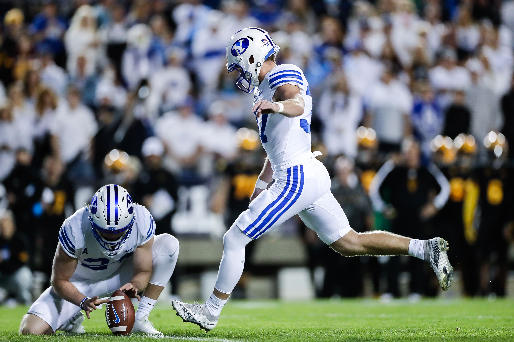
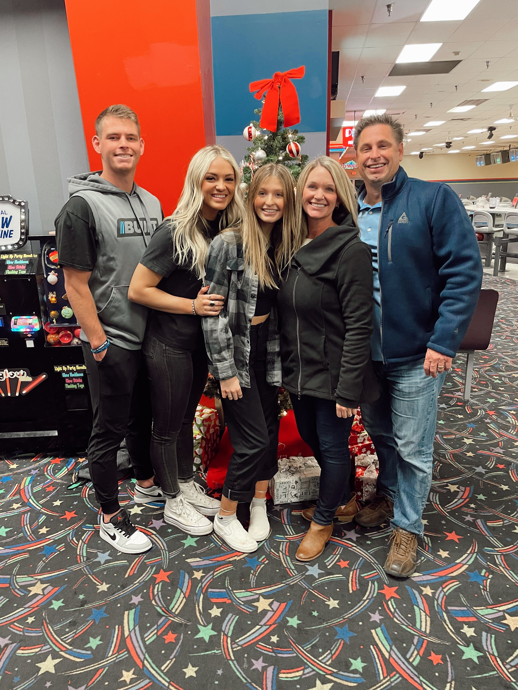

I was born on May 12, 2000 to the greatest parents - Courtney and Tennille Smith. I was born in Corona, California, but my entire childhood was spent in Sandy, Utah, which is where my family moved to when I was a young boy. As the oldest of three children, I grew up as the guniea pig of the family. My younger brother, Owen, is 20 years old and is currently serving his church mission in Trinidad and Tobago. My sister, Cambria, is 15 years old and is just about to finish her freshman year of high school. To say the least, I love my family and am grateful for them in my life.
 Justen Smith - BYU Football BioAfter graduating from Brighton High School in 2018, I served a mission for the Church of Jesus Christ of Latter-Day Saints two years in Buenos Aires, Argentina. These were the best years of my life! Since returning home from this two year mission I have been studying at Brigham Young University and playing football. Through the two years that I have been playing football at BYU, I have started in six games and have tallied a total of 23 points.
My time at BYU has been so important to me. I have made countless memories and have met so many people. It just so happened that I found the love of my life, McKaylee Edwards, while living in Provo! I will be getting married on July 21, 2022 and will be sealed in the Oquirrh Mountain Temple in South Jordan, Utah.